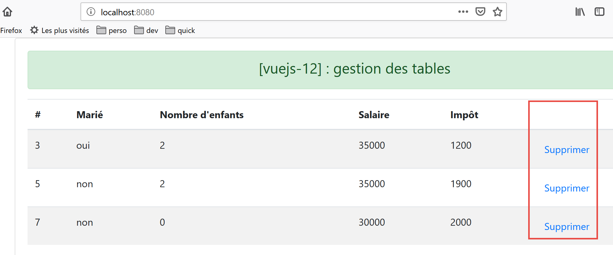

14. Projeto [vuejs-12]: Gestão de tabelas HTML
A estrutura de diretórios do projeto [vuejs-12] é a seguinte:

14.1. O script principal [main.js]
O script principal volta a ser o que era nos projetos iniciais:
// imports
import Vue from 'vue'
import App from './App.vue'
// plugins
import BootstrapVue from 'bootstrap-vue'
Vue.use(BootstrapVue);
// bootstrap
import 'bootstrap/dist/css/bootstrap.css'
import 'bootstrap-vue/dist/bootstrap-vue.css'
// configuration
Vue.config.productionTip = false
// instanciation projet [App]
new Vue({
name: "app",
render: h => h(App),
}).$mount('#app')
14.2. A vista principal [App]
O código para a vista principal [App] é o seguinte:
<template>
<div class="container">
<b-card>
<!-- message -->
<b-alert show variant="success" align="center">
<h4>[vuejs-12] : gestion des tables</h4>
</b-alert>
<!-- table component -->
<Table @supprimerLigne="supprimerLigne" :lignes="lignes" @rechargerListe="rechargerListe" />
</b-card>
</div>
</template>
<script>
import Table from "./components/Table";
export default {
// nom
name: "app",
// composants utilisés
components: {
Table
},
// état interne
data() {
return {
// liste des simulations
lignes: [
{ id: 3, marié: "oui", enfants: 2, salaire: 35000, impôt: 1200 },
{ id: 5, marié: "non", enfants: 2, salaire: 35000, impôt: 1900 },
{ id: 7, marié: "non", enfants: 0, salaire: 30000, impôt: 2000 }
]
};
},
// méthodes
methods: {
// suppression d'une ligne
supprimerLigne(index) {
// eslint-disable-next-line
console.log("App supprimerLigne", index);
// suppression ligne à la position [index]
this.lignes.splice(index, 1);
},
// rechargement de la table des lignes
rechargerListe() {
// eslint-disable-next-line
console.log("App rechargerListe");
// on régénère la liste des lignes
this.lignes = [
{ id: 3, marié: "oui", enfants: 2, salaire: 35000, impôt: 1200 },
{ id: 5, marié: "non", enfants: 2, salaire: 35000, impôt: 1900 },
{ id: 7, marié: "non", enfants: 0, salaire: 30000, impôt: 2000 }
];
}
}
};
</script>
Comentários
- a vista principal exibe um componente [Table] (linhas 9, 15, 21);
- linha 9: o componente [Table] aceita o parâmetro [:rows], que representa as linhas a serem exibidas numa tabela HTML. Estas linhas são definidas pelas linhas 27–31 do código;
- linha 9: o componente [Table] pode desencadear dois eventos:
- [deleteRow]: para eliminar uma linha, especificando o seu índice (linha 38);
- [reloadList]: para regenerar a lista nas linhas 27–31. De facto, veremos que o utilizador pode eliminar algumas das linhas apresentadas;
- linhas 38–43: o método responsável por tratar o evento [deleteRow]. Recebe o índice da linha a ser eliminada como parâmetro;
- linhas 45–54: o método responsável por tratar o evento [reloadList]. Ao modificar o atributo [rows] na linha 27, desencadeamos uma atualização do componente [Table] na linha 9, uma vez que este possui um parâmetro [:rows="rows"] ;
14.3. O componente [Table]
O componente [Table] é o seguinte:
<template>
<div>
<!-- empty list -->
<template v-if="lignes.length==0">
<b-alert show variant="warning">
<h4>Votre liste de simulations est vide</h4>
</b-alert>
<!-- reload button-->
<b-button variant="primary" @click="rechargerListe">Recharger la liste</b-button>
</template>
<!-- non-empty list-->
<template v-if="lignes.length!=0">
<b-alert show variant="primary" v-if="lignes.length==0">
<h4>Liste de vos simulations</h4>
</b-alert>
<!-- simulation table -->
<b-table striped hover responsive :items="lignes" :fields="fields">
<template v-slot:cell(action)="row">
<b-button variant="link" @click="supprimerLigne(row.index)">Supprimer</b-button>
</template>
</b-table>
</template>
</div>
</template>
<script>
export default {
// propriétés
props: {
lignes: {
type: Array
}
},
// état interne
data() {
return {
fields: [
{ label: "#", key: "id" },
{ label: "Marié", key: "marié" },
{ label: "Nombre d'enfants", key: "enfants" },
{ label: "Salaire", key: "salaire" },
{ label: "Impôt", key: "impôt" },
{ label: "", key: "action" }
]
};
},
// méthodes
methods: {
// suppression d'une ligne
supprimerLigne(index) {
// eslint-disable-next-line
console.log("Table supprimerLigne", index);
// on passe l'information au composant parent
this.$emit("supprimerLigne", index);
},
// rechargement de la liste affichée
rechargerListe() {
// eslint-disable-next-line
console.log("Table rechargerListe");
// on émet un événement vers le composant parent
this.$emit("rechargerListe");
}
}
};
</script>
Comentários
Este componente tem dois estados:
- exibe uma lista numa tabela HTML;
- ou uma mensagem a indicar que a lista a apresentar está vazia;
O primeiro estado é exibido se a condição [lines.length!=0] for verdadeira (linha 12):

O segundo é exibido se a condição [lines.length==0] for verdadeira (linha 4).

- [lines] é um parâmetro de entrada do componente (linhas 29–33);
- linhas 4–10: em vez de inserir um bloco de código com uma tag <div>, utilizámos aqui uma tag <template>. A diferença entre as duas é que a tag <template> não é incluída no código HTML gerado;
- linha 9: quando a lista apresentada pela tabela HTML está vazia, um botão oferece a possibilidade de a atualizar. Quando este botão é clicado, o método [reloadList] nas linhas 57–62 é executado. Este método simplesmente envia o evento [reloadList] para o componente pai, o que instrui o pai a regenerar a lista apresentada pela tabela HTML;
- linhas 12–22: o código exibido quando a lista a ser exibida não está vazia;
- linha 17: a tag <b-table> é a tag que gera uma tabela HTML. Os atributos utilizados aqui são os seguintes:
- [striped]: a cor de fundo das linhas alterna. Há uma cor para as linhas pares e outra para as ímpares. Isto melhora a visibilidade;
- [hover]: a linha sobre a qual o cursor passa muda de cor;
- [responsive]: o tamanho da tabela adapta-se ao ecrã em que é apresentada;
- [:items]: a matriz de itens a apresentar. Aqui, a matriz [rows] é passada como parâmetro ao componente (linhas 30–32);
- [:fields]: uma matriz que define o layout da tabela HTML (linhas 37–44);
- Cada elemento na matriz [fields] define uma coluna na tabela HTML;
- [label]: especifica o cabeçalho da coluna;
- [key]: especifica o conteúdo da coluna;
- linha 38: define a coluna 0 da tabela HTML:
- [#]: é o cabeçalho da coluna;
- [id]: é o seu conteúdo. É o campo [id] da linha apresentada que irá preencher a coluna 0;
- linha 39: define a coluna 1 da tabela HTML:
- [Casado]: é o cabeçalho da coluna;
- [married]: é o seu conteúdo. É o campo [married] da linha exibida que irá preencher a coluna 0;
- linha 43: define a última coluna da tabela HTML:
- a coluna não tem título;
- o seu conteúdo é definido por um campo [action], um campo que não existe nas linhas apresentadas. Esta chave é referenciada na linha 18 do [template]. A chave é, portanto, utilizada aqui exclusivamente para identificar uma coluna;
- linhas 18–20: este código é utilizado para definir a última coluna da tabela HTML, aquela com a chave [action]:
<template v-slot:cell(action)="row">
A sintaxe [v-slot:cell(action)] refere-se à coluna com a chave [action]. Esta sintaxe permite definir uma coluna quando a sintaxe da matriz [fields] não é suficiente para a descrever. Aqui, queremos que a última coluna contenha um link que permita eliminar uma linha da tabela HTML:

Na sintaxe [<template v-slot:cell(action)="row">], o nome [row] refere-se à linha da tabela. Pode utilizar qualquer nome que desejar. Poderíamos ter escrito [<template v-slot:cell(action)="row">];
- linha 19: um <b-button> apresentado como um link [variant='link']. Clicar neste link aciona a execução do método [supprimerLigne(row.index)]. Aqui, [row] é o nome dado à linha na tabela HTML, linha 18 do código;
- Linhas 50–55: o método [deleteRow];
- linha 54: o evento [deleteRow] é enviado para o componente pai juntamente com o número da linha a ser eliminada;
- linhas 57–62: o método [reloadList];
- linha 61: o evento [reloadList] é enviado para o componente pai;
14.4. Executar o projeto

A primeira vista apresentada é a seguinte:

Após eliminar a linha 1 [1], a vista fica assim:

Após eliminar todas as linhas:

Após clicar no botão [2], a lista é restaurada: